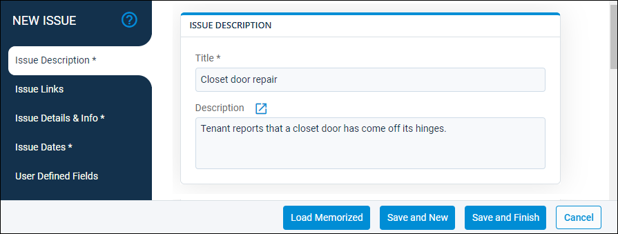
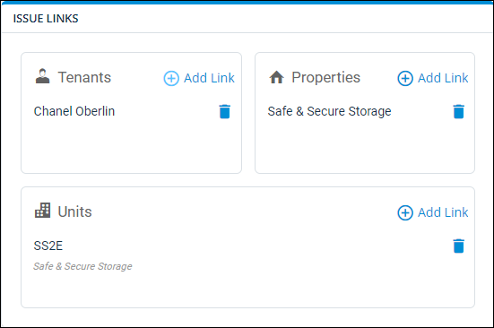
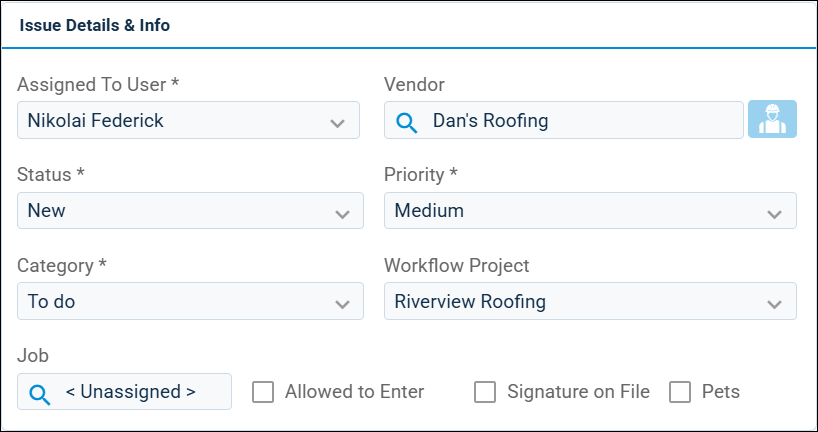
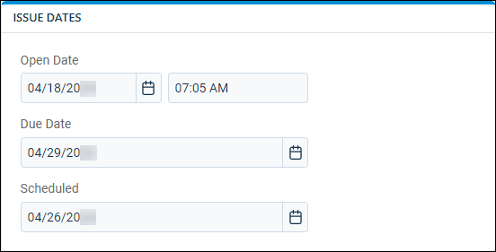
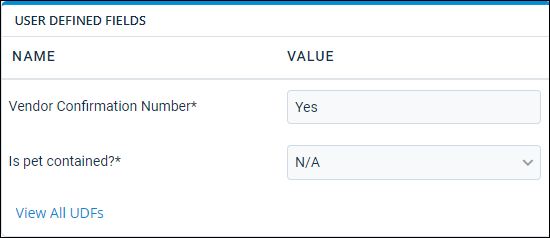

Source: https://rmxhelp.rentmanager.com/Topics/Express/Other/Issue-Add.htm
Add an Issue
Issues are created in Rent Manager to track work that needs to be done, such as recurring maintenance activities, service requests from tenants, and office tasks that need to be completed by employees. The New Issue wizard allows you to efficiently create a new service issue. You can link the issue to an entity (i.e., tenants, units, prospects, and properties) to maintain a historical record of work performed, set various conditions to track its progress from start to finish, and assign the user(s) to complete the work. Additionally, if there are any expenses or charges associated with the issue, you can easily create purchase orders, invoices, and vendor and owner bills within the wizard to directly link them to the issue.
More Information
To streamline the creation process, consider setting up issue priorities, categories, statuses, and other information related to your issues before adding service issues. For more information, refer to Customize Service Issue Options.
Step 1: Add Issue and General Information
Related Privileges
| Group | Privilege | Column |
|---|---|---|
| Service Manager | Issues | Add, View |
For more information, refer to Control User Access.
To create an issue, do the following:
-
Go to
 arrow_forward Services arrow_forward Service Manager arrow_forward New Issue.
arrow_forward Services arrow_forward Service Manager arrow_forward New Issue.
On the left, the Issue Description tab is selected by default when you open the wizard.
-
To load a previously saved issue template, at the bottom of the wizard, click Load Memorized to load the issue information from a memorized issue template.
-
In the Issue Description section, enter the issue's information into the available fields described below.
Field Description Title
The name of the issue to display on the Issues page.
Description
Additional information about the issue, such as the work that needs to be completed in order for the issue to be considered resolved.
Step 2: Add Links

After entering the service issue information, select the Issue Links tab on the left.
In the Issue Links section, add the entity or entities that are associated with this issue. To create a link, click  Add Link on the desired entity type. Each option is described below.
Add Link on the desired entity type. Each option is described below.
| Field | Description |
|---|---|
|
Current Tenant |
Link the issue to a tenant that currently leases at one of your properties. Selecting this option automatically adds a link to the property and, if applicable, unit with which the tenant is associated. |
|
Past/Future Tenant |
Link the issue to a tenant with a Move Out date that is before the current date or a tenant with a Move In date that is after the current date. Selecting this option automatically adds a link to the property and, if applicable, unit with which the tenant is associated. |
|
Prospect |
Link the issue with a prospect account. Selecting this option automatically adds a link to the property and, if applicable, unit with which the prospect is associated. |
|
Unit |
Link the issue to a specific unit. Selecting this option automatically adds a link to the property with which the unit is associated. |
|
Property |
Link the issue to a specific property. |
Step 3: Add General Information

After adding links for the issue, select the Issue Details & Info tab on the left. In the Issue Details & Info section, enter or select additional issue information into the available fields described below.
| Field | Description |
|---|---|
|
Assigned To User |
The user who is to complete the issue. Related Preferences If a user is set up as the default assignee for service issues in system preferences, their name automatically populates in this field. For more information, refer to Service Issue General Options (System Preferences). |
|
Status |
The condition that describes the current progress of the issue, such as New or Waiting for Parts. |
|
Category |
The classification that best describes the type of issue being created. |
|
Job |
If applicable, the job associated with the issue. Related Preferences In order to use the job costing tool in Rent Manager, Enable job costing must be checked in system preferences. For more information, refer to General Options (System Preferences). |
|
Signature on File |
Check to indicate that the property management company has the tenant's signature stored. Related Preferences This field displays only when Signature on File is checked in system preferences. For more information, refer to Service Issue General Options (System Preferences). |
|
Vendor |
The vendor to complete the work outlined in the Work Orders section. Selecting a vendor in this field removes the Vendor field in the Work Orders section. If work orders are to be completed by multiple vendors, leave this field blank. |
|
Priority |
The urgency with which the issue needs to be completed. |
|
Workflow Project |
The collection of service issues and/or tasks with which the issue is associated. |
|
Allowed to enter |
Check to indicate that service technicians may enter the unit associated with the issue without the tenant present. Related Preferences This field displays only when Allowed To Enter is checked in system preferences. For more information, refer to Service Issue General Options (System Preferences). |
|
Pets |
Check to indicate that the tenant associated with the issue has pets. Related Preferences This field displays only when Has Pets is checked in system preferences. For more information, refer to Service Issue General Options (System Preferences). |
Step 4: Set Dates

After entering details and information for the issue, select the Issue Dates tab on the left. In the Issue Dates section, enter the applicable date(s) and time(s) for the issue in the fields described below.
| Field | Description |
|---|---|
|
Open Date |
The date and time that the issue is available to service technicians. This field populates with the date and time the issue was created by default. |
|
Due Date |
The date by which the issue must be completed. |
|
Scheduled |
The expected date of the issue's resolution. |
Step 5: Enter Issue UDF Values

After entering the issue's general information, select the User Defined Fields tab on the left. In the User Defined Fields section, only required UDFs display in the Name column. Required UDFs are marked with an asterisk (*) and must have a Value entered to create the issue.
To view all the issue-type UDFs in the database, click View All UDFs. For each UDF applicable to the owner you are adding, enter or select the information in the Value column for the associated UDF.
Step 6: Save the New Issue
Once you have established the issue-type UDFs, click Save and Finish to complete the issue creation process and close the pop-up. Alternatively, click Save and New to finish adding the issue and refresh the pop-up to add another issue.